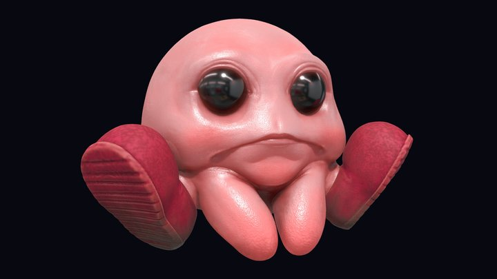

ОБЕЗЬЯНЫ
"Обезьяны - вото удивительные создания. Они обитают в джунглях и планет возделывают бананы. Когда-то, в далёком прошлом, они обучались владеть оружием и стрелять из пальца, но сейчас они предпочитают делать гимнастику и прыгать с ветки на ветку, иногда они падают вниз, но не беспокойтесь, их шерсть аморти
